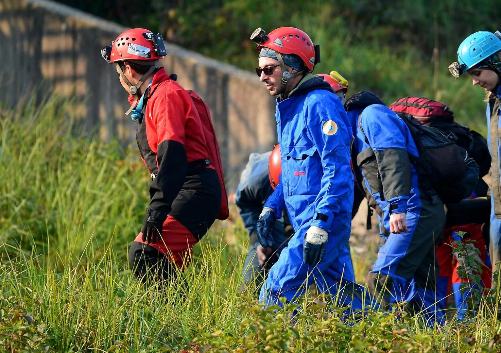

Vježba "Zagreb 2018."
Odrađena je još jedna vježba postrojbi CZ pod nazivom "Zagreb 2018" u kojoj su speleolozi opet imali svoj dan. Neki u podrumu, neki u šahtu, a neki i u čamcu...

U subotu 20. listopada održana je još jedna vježba postrojbi civilne zaštite grada Zagreba sa 500 učesnika, i to iz; Ministarstva unutarnjih poslova – Policijske uprave zagrebačke, Državne uprave za zaštitu i spašavanje, Državnog zavoda za radiološku i nuklearnu sigurnost, Nastavnog zavoda za hitnu medicinu Grada Zagreba, Javne vatrogasne postrojbe Grada Zagreba, Vatrogasne zajednice Grada Zagreba, Hrvatske Gorske službe spašavanja – Stanice Zagreb, Nastavnog zavod za javno zdravstvo „Dr. Andrija Štampar“, Gradskog društva Crvenog križa Zagreb, Zagrebačkog speleološkog saveza, Zagrebačkog radio-amaterskog saveza i udruga za obuku potražnih pasa KOSSP i HUOPP.
Osnovni scenarij vježbe i ovoga puta bio je razoran potres koji je pogodio Zagreb čime su aktivirane specijalističke i opće postrojbe Civilne zaštite. Odabrana lokacija i ovoga puta bila je nikad završena bolnica Blato, a da bi cijeli scenarij djelovao što stvarnije, tijekom vježbe postrojbama su mijenjane situacije. Okupljanje je bilo relativno rano u 08.00 sati na dvije lokacije (Novi Zagreb i Jankomir), a nešto prije 10, akcija je pokrenuta te smo u koloni i sa svim sredstvima krenuli prema Blatu. Novost je bila i forsiranje - prebacivanje dijela snaga preko rijeke Save (pod pretpostavkom urušenih mostova), a to je, prema oduševljenju timova speleologa iz zone Jankomir, bio i najbolji dio vježbe.
Osim vatrogasnih i HGSS dronova, korištena je i bespilotna letjelica, a iako su nas upozorili da bi moglo biti problema u korištenju veza u podrumskim prostorijama, komunikacijski sistem je bio prilično učinkovit i u tim uvjetima, tako da problema sa vezom i nije bilo.
Način rada bio je otprilike isti kao i na svim vježbama: HGSS - spašavanje s visina (što znači najviši katovi i krov), Vatrogasci - prizemlje i prva dva kata, a speleolozi naravno gdje bi drugdje nego u - podrum. Uz malo digresiju da je taj podrum konstantno pod 10-15 cm vode. A da je već dugo pod vodom, govori i kako smo unutra osim neizbježnih štakora, zamijetili i ribice.
Ukupno 20 speleologa ZSS-a iz četiri društva (SOV 13, SOŽ 4, DDISKF 2, SKOL 1), podijeljeno je u 4 tima. Dva su izravno ušla u podrum i krenuli sa potragom, druga dva su pridodana snagama koje forsiraju Savu. "Unesrećeni" su bili posakrivani po brojnim prostorijama, timovi nisu znali njihov broj tako da je pretraga morala biti temeljita. "Ozlijede" su zahtjevale više pažnje (kralježnica, lomovi) i brza izvlačenja, tako da smo unatoč manjkavim sredstvima prve pomoći (nešto smo posudili od HGSS-a), bili prisiljeni i na neke improvizacije. Iz podrumske perspektive teško je reći što se sve događalo vani, koliko je 500 učesnika; timova, službi bilo usklađeno i kako je sve funkcioniralo, no o tome dobru predodžbu sigurno ima zapovjedništvo vježbe. Što se nas podzemljaša tiče, brzo smo pronašli unesrećene, sanirali ozlijede kako i čime smo mogli, tako da smo vrlo brzo obaviješteni od strane našeg voditelja; "e super, sada ste vi unesrećeni. Na vas se zarušilo, ostajete u podrumu, šaljemo timove koji prelaze Savu da vas pronađu. I da, izmislite si neke ozlijede da vas moraju nositi". I tako moj tim 1 ostade u mraku, a da ne bismo bili previše živahni uzeli nam i radio stanicu. A iz solidarnosti nismo bili previše maštoviti, tek nešto lomova podlaktica, potkoljenica i jednu hipotermiju zbog predugog stajanja u vodi. Pokazalo se da je ta hipotermija i najgora jer su noge bile toliko "smrznute" da su morala doći i nosila, a ozlijeđena otputovala na površinu najudobnijim mogućim putem.Vani smo svi još pričekali spašavanje vojnika Ryana iz šahta, što je bilo čini se i najkompliciranije, a nakon postrojavanja svih postrojbi i kratkog govora i zahvale pročelnika Ureda za upravljanje u hitnim situacijama Pavla Kalinića, odosmo na zasluženi i uvijek dobar grah. Magla se odavno digla, sunce je grijalo koliko god može u jesenskom modu i tako smo odradili još jednu vježbu.
Kao i iz svake druge vježbe, tako i iz ove, naučili smo nešto novo. Neka nova iskustva, vidjeli što nam fali, što trebamo popraviti - kako na sebi tako i u cijelom sustavu. Nije lako kroz vježbu koordinirati toliki broj ljudi, operativnih postrojbi, civilnih službi, a sigurno će u -nedaj Bože- stvarnoj situaciji biti i još teže. Zato vježbamo i učimo. Osim redovitih zagrebačkog HGSS-a i zagrebačkih speleologa, u svakoj vježbi su i neke nove vatrogasne postrojbe kao i pripadnici CZ. Zato se operativne radnje i postupci, nastoje uskladiti da bi svima bili poznati, bez obzira iz koje postrojbe, dvd-a ili gradskog kvarta bili. Zato je od vježbe važnije ono što se treba provoditi nakon nje - RND (u vojsci omiljena Raščlamba nakon djelovanja i sustav naučenih lekcija). To je bitno u ovom "buketu" profesionalnih, poluprofesionalnih i amaterskih ekipa. Iz toga se uočavaju i otklanjaju nedostaci. Vježba je uvijek bila samo fizička provjera da li smo nešto naučili i što smo poboljšali od zadnjeg puta i kako smo implementirali neke nove dodatke.
Ako mi kao speleolozi išta možemo ovako javno predložiti prema UHS i Gradu Zagrebu, onda bi to svakako bio tečaj osvježenja znanja ITLS. Zadnji je bio već prije toliko godina da nije pristojno ni spominjati.Ne zaboravimo i to da su svi speleolozi u ovu specijalističku postrojbu pristupili dragovoljno. U puno tih stvarnih situacija pokazala se ljudska solidarnost među speleolozima, tako da to i ne treba čuditi. Speleološka međusobna solidarnost pokazala se odmah na ulasku u podrum, gdje nas je dočekala gajba pive sa uputom - iskoristiti tek nakon vježbe, što smo kao disciplinirani pripadnici specijalističke postrojbe i učinili. Hvala ti vođo!
[gallery ids="1990,1991,1992,1993,1994,1995,1996,1997,1998,1999,2000,2001,2002,2003,2004,2005,2006,2007,2008,2012" type="rectangular"]